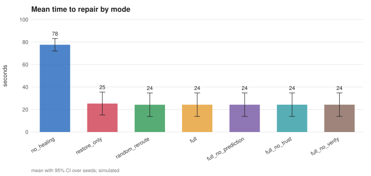

Company networks fail all the time: a cable gets cut, a switch crashes, a link becomes slow or loses packets, or an attacker gets inside. Today a person usually notices the problem after users complain, finds the cause, and fixes it by hand. That takes minutes to hours, and while it lasts users lose their connection.
Build a network that looks after itself. It should:
Think of a hospital patient monitor plus a smart nurse. The monitor (telemetry) shows heart rate and blood pressure. The nurse notices worrying trends early (prediction), checks the ID of everyone entering the room (Zero Trust), decides on treatment (decision engine), gives it (healing) — and keeps watching to confirm the patient actually got better instead of just ticking "medicine given" (verification).
In an SDN, switches do not decide routes on their own; a central program (the controller, here Ryu) tells them what to do using the OpenFlow protocol. That is what makes automatic healing possible: software can change how traffic flows across the whole network in one place.
One core router (rtr-core), two access switches (sw-a, sw-b), five user
computers (h1–h5) and two servers (web srv-web-1, database
srv-db-1). For rerouting experiments we also use a version with an extra backup link between the two
switches, and generated "campus" networks of up to 547 devices.
| Program | Job |
|---|---|
| Ryu controller | Talks OpenFlow to the switches: how packets are forwarded (the "traffic police"). |
| NetworkController (our Python class) | Builds and manages the whole emulated network: starts/stops it, turns devices and links on and off, applies latency/loss/bandwidth limits. The only part of our code allowed to touch the network. |
We kept these separate on purpose: forwarding logic and network management change for different reasons, and keeping them apart means each can be fixed or replaced without breaking the other.
Here is one cycle of the loop, followed by a worked example. Each step lists the module that does it.
| # | Step | What happens |
|---|---|---|
| 1 | Collect telemetry (M2) | For every link and device: up/down, latency, loss, capacity, traffic counters, CPU, memory. |
| 2 | Turn counters into rates (M2) | Switches only give running totals; we compute throughput, utilisation and drop rate from the change since last time. |
| 3 | Health check (M2) | Each link/device is HEALTHY, DEGRADED (e.g. latency > 50 ms) or DOWN. A change creates an event. |
| 4 | Store history (M3) | Readings and events are saved to a SQLite database for analysis and for the AI. |
| 5 | Predict (M4) | From the last 30 s and 120 s of readings, the model gives each link a failure score (0–1). Above the alarm level → "failure predicted". |
| 6 | Zero Trust (M5) | Every network request is checked: right identity? allowed by policy? trust high enough? Suspicious behaviour lowers trust; very low trust → quarantine. |
| 7 | Risk (M6) | Combine prediction, trust, threat and current faults into one risk number per link/device (Eq. 4). |
| 8 | Decide (M6) | Choose actions: RESTORE, REROUTE, LOAD_BALANCE, QUARANTINE, BLOCK, ISOLATE or MONITOR. Safety checks; risky ones wait for a person. |
| 9 | Heal (M7) | Carry out approved actions on the network. |
| 10 | Verify (M7) | Over the next collections, check the real result (link really up? traffic really delivered?). Pass → done. Fail → undo, retry, then escalate to a person. |
| 11 | Show (M8) | The dashboard displays all of it live; an operator can approve or reject actions. |
sw-a ↔ sw-b is cut. It is physical damage: software cannot repair it.| Module | What it does | Main output |
|---|---|---|
| 1. SDN foundation | YAML topology, network builder, NetworkController, network state, event bus, failure injection (router, switch, link, latency, loss, bandwidth), 6 ready-made failure scenarios. | A controllable test network |
| 2. Telemetry & monitoring | Collects readings every interval, derives rates, rates each link/device HEALTHY / DEGRADED / DOWN. | Live readings + health events |
| 3. Data & analytics | SQLite history, cleaning and resampling, rolling-window features, "normal behaviour" baselines, labelled datasets, availability and repair-time statistics. | Datasets for the AI, statistics |
| 4. AI failure prediction | Six models compared fairly; model registry; live early warnings. | Failure score per link |
| 5. Zero Trust security | Device identities, trust scores, behaviour detectors, default-deny policy, switch rules. | Trust levels, blocks, quarantines |
| 6. Decision engine | Combines all signals into risk, plans paths, picks actions, applies safety checks and approval levels. | Actions ("intents") |
| 7. Self-healing | Executes actions, verifies them against the real network, undoes/retries/escalates, fails back. | Verified repairs |
| 8. Dashboard | Web dashboard with live topology, charts, approvals and a simulation mode with controls to inject failures and attacks. | The demo |
| 9. Evaluation & deployment | Reproducible experiments (10 runs each), statistics, figures, results chapter, deployment guide, automatic tests (CI). | Evidence for the report |
| Folder | Contents |
|---|---|
network/config/ | Topology, identities, Zero Trust policy, decision policy (all YAML, editable) |
network/src/network/ | control, failure, telemetry, analytics, prediction, security, decision, healing, simulation, experiments |
controller/apps/ | Ryu application: loop-safe routing, proxy ARP, blocks, statistics, REST API |
viewer/ | FastAPI backend + dashboard (HTML/JS/CSS) |
tests/unit/ | 469 automated tests |
docs/ | Results chapter, deployment guide, demo script, research document |
For each algorithm: what it does in our system, and why we chose it over the alternatives. Equation numbers (Eq. 2, Eq. 4 …) refer to our research document.
What: the controller reads the same topology file as Mininet. It answers every ARP question itself (a host's IP → its registered MAC, a gateway IP → a virtual gateway MAC), so nothing is ever flooded between switches. For each destination host it computes a breadth-first shortest-path tree over the links that are up and installs one rule per switch ("packets for 10.0.2.10 leave through port 2"). At the last switch, routed packets get their MAC addresses rewritten and TTL decremented, so the whole network acts as one router. When a link or switch goes down, all paths are recomputed at once; the self-healing engine can also pin a path for a destination.
Why: the classic MAC-learning switch floods unknown traffic, which circulates forever in a network with redundant links — and redundant links are exactly what self-healing needs. A tree per destination is loop-free by construction, BFS is fast for campus-sized networks, and because hosts' ARP messages only ever reach the controller, ARP spoofing between hosts has no effect.
What: before building the network we check unique names and IDs, IPs inside their subnets, every link pointing at real devices, and every host having exactly one link.
Why: a wrong YAML file would otherwise fail deep inside Mininet with confusing errors; checking first gives a clear message.
Why: real switches (OpenFlow port statistics) only report running totals, never rates. Doing the maths ourselves, including restart detection, means the same code works for simulated and real data and never produces a fake negative "spike".
What: DOWN if the status reading is 0; DEGRADED if latency > 50 ms, loss > 2 %, utilisation > 85 %, drop rate > 100 packets/s, or CPU/memory > 90 %; otherwise HEALTHY. Events are sent only when the status changes.
Why: fixed thresholds are transparent and instant, which is exactly what you want for "is it broken right now?". Sending only changes avoids flooding later modules with repeated messages. (Learned "normal" ranges and prediction are added in Modules 3–4.)
What: in the simulation, each reading sends 50 virtual probes, each lost with the configured probability.
Why: a real ping test is noisy — 10 % loss does not read exactly 10 % every time. Adding realistic noise keeps the AI and health checks honest instead of letting them learn a perfectly clean number.
What: readings are grouped into equal time buckets (e.g. every 5 s) and averaged. Gaps of up to 2 buckets are filled with the last value; longer gaps stay empty.
Why: machine learning needs evenly spaced data. Filling only short gaps avoids hiding a real outage behind made-up values.
What: for each metric, over the last 30 s and 120 s: mean, standard deviation, min, max, latest value, change, and trend (least-squares slope).
Why: failures are often preceded by a trend (latency creeping up), not just a high value. Two window lengths capture both quick spikes and slow drifts. Features only use past data, so the model can never "see the future".
What: from a healthy period we learn each series' mean, standard deviation and 50th/95th/99th percentiles, then score new readings by how many standard deviations they are from normal.
Why: a link whose latency jumps from 0.05 ms to 5 ms is still far below the 50 ms threshold, but very abnormal for that link. The small floor stops division by zero for series that never vary.
What: each row is labelled "failure in progress" or "failure coming within 60 s". Rows just after a failure (the "cooldown") are excluded, and the time between failures is random.
Why: while preparing Module 4 we found a data leak: with a fixed gap between failures, a model could "predict" failures that had no warning signs just from the schedule. Random gaps plus the cooldown removed it — afterwards no model could predict sign-less failures (as it should be).
We compared six models on the same data. Each was trained, tuned and tested on different simulation runs (never a random split of rows, which would inflate scores).
| Model | What it is | Why we included it |
|---|---|---|
| Health thresholds | The Module 2 rules applied to the latest values | The "no AI" bar to beat |
| Z-score | Largest distance from normal of the latest value and trend | Simple statistics; tells us whether AI adds anything |
| Logistic regression | A weighted sum of features turned into a probability | Fast, interpretable (you can read the weights) |
| Random forest | Many decision trees voting | Captures non-linear patterns; robust |
| Gradient boosting | Trees built one after another to fix earlier errors | Often the most accurate on tables; handles missing values |
| Isolation Forest | Unsupervised: isolates unusual points | Works without labels (real networks rarely have labelled failures) |
What: on the tuning runs, pick the score threshold that catches the most failures while keeping false alarms at or below 1 per hour. That threshold is then fixed for the test runs.
Why: operators stop trusting a system that cries wolf. Fixing the threshold before testing keeps the test honest.
What: every trained model is saved with a "model card" (threshold, scores, data used). Only a promoted "champion" runs live; the previous one can be restored with one call.
Why: it lets us swap in a better model without code changes, and roll back if a new one behaves badly.
What: each device starts at a base trust (e.g. admin 0.9, employee 0.8, contractor 0.6, minus 0.1 for each missing security item such as "not managed"). Every suspicious event lowers it; the effect halves every 5 minutes.
Why: recent behaviour should matter more than old behaviour, and a device that behaves well again should slowly regain trust. The half-life makes "how quickly we forgive" a single clear setting.
What: TRUSTED at 0.7 or more, RESTRICTED in between, QUARANTINED below 0.3. A quarantined device is released only when trust climbs back to 0.5 (capped just below its own base).
Why: a gap between "enter" and "leave" levels stops a device flickering in and out of quarantine. The cap fixed a bug where contractors (base 0.5) could never be released.
| Detector | Algorithm | Why |
|---|---|---|
| Identity spoofing | Compare the claimed IP/MAC with the device on that switch port | A device pretending to be another is the clearest attack signal |
| Brute-force logins | Sliding 60 s window: ≥ 5 failed logins | Normal users rarely fail that often that fast |
| Port scan | Sliding 30 s window: ≥ 10 different destination ports | Scanners probe many ports; normal apps use a few |
| Policy violation | Count requests the device's role may never make | Reaching for forbidden services = lateral movement |
| Volume anomaly | EWMA (moving average) of each device's own traffic; alert at z > 6 | Each device has its own normal; learning only from normal data avoids "learning" the attack |
| Flood (DDoS) | Shannon entropy of traffic per sender: H = −Σ p·log p | Normal traffic is spread over many senders; a flood concentrates it on one, so entropy drops |
What: every request is checked in order: known device? → genuine identity? → not quarantined? → a rule allows this role to reach this server and port? → trust above that rule's minimum? Only then allowed.
Why: this is the core of Zero Trust — "never trust, always verify". Least privilege means each role only gets the services it needs (e.g. only admins may use SSH).
What: table 0 checks "this port only sends with its own MAC/IP" (identity), table 1 checks "what may it access" (policy + quarantine). Rules are rebuilt from the current trust every cycle.
Why: separating "who are you" from "what may you do" mirrors how Zero Trust is designed and how OpenFlow switches work. Our tests check the switch rules never disagree with the policy decisions.
Why: one number lets very different signals (AI, security, health) be compared and ranked. The fault weight is the largest so that something already broken always gets attention. (We corrected the threshold from 0.35 to 0.15 after noticing 0.35 would only ever act on links that were already down.)
What: to reroute, we find the cheapest path that avoids the failed link and still has spare capacity. Hosts are never used as stepping stones.
Why: Dijkstra is fast, exact and well understood. Putting loss, latency and predicted failure into the cost avoids moving traffic onto a path that is itself about to fail.
What: move connections off a congested link one at a time, keeping a move only if the busiest link gets lighter.
Why: simple, explainable, and good enough for a small network; an exact optimiser would be heavier without clear benefit here.
What: one action per target (security > restore > reroute > load balance > monitor); no duplicates; a 60 s cooldown after an action is resolved (except for hard failures and security); and approval levels — L1: a person approves everything, L2: reversible actions are automatic, risky ones wait, L3: fully automatic.
Why: automation that flip-flops or isolates servers on a hunch is dangerous. These rules keep the system stable and keep a human in charge of risky moves.
What: after each action, check its "post-conditions" against the real network over the next 3 collections; it must pass on 2 in a row. Checks: link/device really up (telemetry), traffic really delivered on the new path, test packet really blocked. Fail → undo, retry once after 10 s, then escalate (repairs) or mark failed.
Why: the project brief requires proving that a fix worked, not just that a command ran. Without verification our system reported 100 % success while 2 repairs per run did nothing.
Why: it measures what users actually experience, which lets us compute "user-visible packet loss" and check reroutes end to end.
What: in the simulation, some failures are "physical" (a cut cable): software cannot fix them, and telemetry reads the true state, not what the controller believes.
Why: without it every repair would trivially succeed and verification would prove nothing.
What: each experiment runs 10 times with different seeds. We report the mean with a 95 % confidence interval (Student t). To compare two settings we use the paired Wilcoxon signed-rank test, adjust p-values with Holm's correction when making several comparisons, and report an effect size.
Why: 10 runs are too few to assume a normal distribution, so a rank-based test is safer. Pairing (same seed in both settings) removes run-to-run noise. Holm's correction prevents "lucky" findings when testing many comparisons. Detection quality in Module 5 uses AUROC (computed with the Mann–Whitney rank method): the chance that an attacking device is ranked above a normal one.
main (9 pull requests so far).The real emulated network (Mininet + Open vSwitch) only runs on Linux, and development happened on a Mac. Rather than wait, we built a faithful simulated data plane behind the same interfaces, so every module could be built and tested now and switched to the real network later with minimal changes. When the Linux VM came up, the first live run of Module 1 found four problems no simulation could (container build, Ryu installation, two test bugs); all were fixed and 221 tests now pass on the real network.
| Problem | What we did |
|---|---|
| Data leak in prediction datasets | Fixed gaps between failures let models "cheat"; made gaps random and excluded cooldown rows. |
| Zero Trust "death spiral" | Low-trust denials were counted as misbehaviour, pushing trust lower and lower (52 % of legitimate traffic blocked). Stopped counting them. |
| Contractors stuck in quarantine | Release level equalled their base trust, which is never reached; capped it just below base. |
| Reroutes undoing themselves | Planning from already-moved routes cancelled reroutes; now plans from the original routes. |
| Risk threshold too high | 0.35 could only act on dead links; changed to 0.15 and documented why. |
| Cooldown delaying a real repair | Found by running the live dashboard; hard failures are now exempt. |
| Predictor false alarms at start-up | It now waits until it has a full window of history. |
| Results not saved in the repository | An ignore rule hid docs/results/; fixed and committed the archived run. |
Python 3.9+ · PyYAML · NumPy · scikit-learn · SciPy · SQLite · FastAPI + uvicorn · plain JavaScript + SVG + Cytoscape.js (dashboard) · Mininet, Open vSwitch, Ryu, Docker (live network) · Git, GitHub, GitHub Actions.
Simulated network · 10 runs per condition, 3 simulated hours each · mean [95 % confidence interval] ·
full details in docs/results.md.
| Question | Answer |
|---|---|
| Does self-healing help? | Yes. Mean time to repair 78 s → 24 s; traffic lost by users during outages 93 % → 33 %. Better in all 10 runs (p = 0.006). |
| Does verification matter? | Yes, most of all. Without it the system reports 100 % success while about 2 repairs per run did nothing. |
| Does AI prediction help healing? | Not in simulation: detection is already within one 5 s reading, so predicting can't beat reacting. It matters when real detection is slower. |
| Which predictor is best? | Logistic regression catches 97 % of failures that have warning signs (z-score 83 %, difference not significant); complex models did worse. |
| Does Zero Trust work? | Every synthetic attack detected; AUROC 0.946; 1.0 % of attack traffic slipped through; 0 % of legitimate traffic blocked. |
| Are decisions correct? | 100 % agree with our written rules; 0.03 unneeded actions per hour; decisions take 0.18 ms. |
| Smarter paths vs random paths? | Same repair time; cost-based paths are slightly shorter (1.17× vs 1.20× the original length). |
| What limits healing? | Physical damage: repair time 5 s when no faults are physical, 44 s when 75 % are. |
| Does it scale? | 547 devices: 0.26 s of work per 5 s cycle. Zero Trust rule rebuilding is the bottleneck. |

make net-test).The full walkthrough is in docs/demo-script.md.
| Term | Meaning |
|---|---|
| SDN | Software-Defined Networking: a central program (controller) decides how switches forward traffic. |
| OpenFlow | The protocol the controller uses to install forwarding rules on switches. |
| Ryu | The open-source SDN controller we use. |
| Mininet / Open vSwitch | Tools that create a realistic virtual network of hosts and software switches on Linux. |
| Telemetry | Measurements about the network: status, latency, loss, traffic, CPU. |
| Zero Trust | Security model: trust no device by default; verify identity and permission on every request. |
| Trust score | A number 0–1 per device that drops when it behaves suspiciously and recovers over time. |
| Quarantine | Blocking all of a device's traffic except to its gateway. |
| Intent | A decided action (RESTORE, REROUTE, QUARANTINE…) described independently of how switches implement it. |
| Post-condition | A check that must be true after an action for it to count as successful. |
| MTTR | Mean Time To Repair: average time from detecting a problem to service working again. |
| Precursor | A warning pattern before a failure (e.g. latency slowly rising). |
| AUROC | Probability that a detector ranks a bad case above a good one (1.0 = perfect, 0.5 = guessing). |
| Confidence interval | A range that very likely contains the true average, given run-to-run variation. |
| p-value | How surprising a difference would be if there were really no effect; below 0.05 = statistically significant. |
| Simulated / synthetic | Produced by our model rather than measured on a real network. |